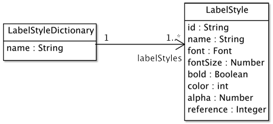
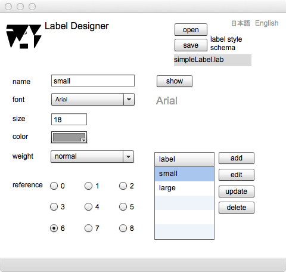

Label Designer
注記デザイン
注記とは、地図上に図形で表示されている地物が何かを示す文字列のことで，英語ではlabelといい，地図上に注記を置くことをlabelingといいます．注記を置くときは，対象となる地物との位置関係，他の注記との位置関係，そして注記となる文字列のサイズ，色，書体などに気をつけるべきです．
現在gittokでは，注記の位置は自動的に決められてしまいますので，自由になるのはサイズ，色，フォントなどに限られます．ただし，地物の種類，等級などによって，異なるラベリングをしないと，地物の種類を見分けることができなくなります．等級の上のものはサイズを大きくする，同じ種類のものはフォントや色を同じにする．でききるだけ色の種類は少なくすると同時に，地物の色より明度を下げるなど，注記と地物の区別が容易にできるようにするといった配慮が求められます．
以下，まず注記スタイルスキーマについて説明し，次にこのページの操作方法を解説します．
注記スタイルスキーマ

図１．注記スタイルスキーマのクラス図
LabelStyleSchema
注記スタイルスキーマは，注記スタイルの集りです．名前 (name) をもつと同時に，複数の注記スタイルと関連 (labelStyles)します．
LabelStyle
注記スタイルは，その識別子 (id) ，名前 (name)，フォントの種類 (font) ，フォントのサイズ (fontSize)，色 (color)，太字かどうか (bold)，そして，文字列の参照位置 (reference)をもちます．この中で，参照位置とは，注記の文字列のどの場所に原点が来るかを示す番号です．例えば，左下を参照位置にしたい場合は，番号は6です．
図２．注記の参照位置
Label Designerの操作画面

図３．Label Designerの操作画面
表示欄
label style schema
注記スタイルスキーマをオープンしたりセーブすると，そのファイル名が表示されます．
name（編集可能）
注記の名前が表示されます．
font
フォントの種類が表示されます．ユーザはこの中から注記用のフォントを選ぶことができます．
size（編集可能）
フォントのサイズを指定します．
weight
字の太さ（普通又は太字）を指定できます．
label
定義された注記スタイルの一覧が表示されます．
ボタン
open
注記スタイルスキーマのファイルをオープンします．
save
注記スタイルスキーマのファイルをセーブします．
show
このボタンを押すと，注記のデザインが下に表示されます．これを見て，スタイルを修正することができます．
add
デザインした注記スタイルを一覧に追加登録します．
edit
一覧の中から選ばれた注記スタイルを編集できるようにします．
update
編集結果を一覧に保管します．
delete
一覧の中で指定された注記スチルを削除します．
reference
注記表示の参照位置を指定します．
日本語
今あなたが読んでいるドキュメントが表示されます．
English
You can read the tutorial written in English.